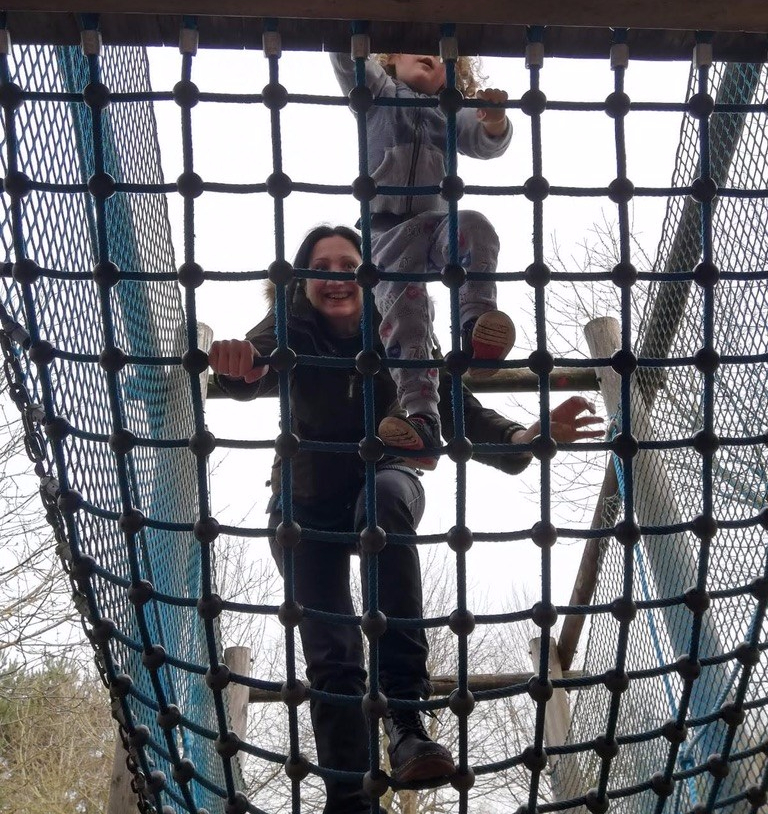

Getting young children interested in environmental issues - HEALTHY LIVING
Sun, 21 Apr 2019 22:02:19
Healthy Living
As parents and caregivers we play an important part in our children’s health, however our all to often busy lifestyles can sometimes be hard on our health, and can make it difficult to find time to be physically active. It's so easy to slip
into the habit of choosing unhealthy snacks and meals or spending our free time watching TV or in front of our phones.
We are our child's first teachers and role models.
By instilling a healthy lifestyle in our children when they are young, we can help build the framework for an entire lifetime of healthy habits.
Healthy Eating
Unfortunately food production causes a lot of damage to the environment, and different food groups affect the environment to different extents, for example:
14.5% of global greenhouse gases comes from livestock.
Ocean dead zones caused by fertiliser runoff from industrial-scale agriculture.
In my earlier post, Forget Meat Free Monday, we're doing Meaty Sunday I talked about the EAT-Lancet Commission report which explained that if a plant-based
diet was primarily consumed, emissions could be reduced by up to 80%, a plant based diet is one that is rich in beans, nuts, seeds, fruit and vegetables, wholegrain and cereal based foods.
The amount of food a child needs varies with age, body size and levels of physical activity. The NHS recommends that we should eat <at least 5 portions of fruit and vegetables
a day. BANT reviewed the current Eatwell Plate, which unfortunately is now out-dated, and have designed the newly published BANT Wellbeing Guidelines, these are evidenced-based guidelines that
provide information on nutrition and lifestyle measures when personalised advice is not possible.
BANT's Eat a Rainbow.
The British Nutrition Foundation has
produced a really helpful guide which advises on portion sizes for toddlers and preschoolers.
Physical Activity
Leading a healthy and active lifestyle is beneficial for everyone and the environment.
A report has noted that being physically active and in contact with nature can be a significant contributor to better mental and physical health. Being
active from a young age has many long-lasting benefits such as creating good
habits for an active adult life. Between the ages of 3 and 6 children develop fundamental movement skills, by providing opportunities to develop these skills, they are able to move confidently and control body movements.

Fun outside.
The UK's Chief Medical Office advises on how much physical activity people should be doing: Children under the age of 5:
For children who are not yet walking, physical activity should be encouraged from birth, particularly through
floor-based play and water-based activities in safe environments.
Children of pre-school age who are capable of walking unaided should be physically active daily for at least
180 minutes (3 hours), spread throughout the day.
All under 5s should minimise the amount of time spent being sedentary (being restrained or sitting) for extended periods (except time spent sleeping).
A study found
that all types of activity especially unstructured, physically active or energetic play has many social, emotional and cognitive benefits. Children and Young People (5-18)
All children and young people should engage in moderate to vigorous intensity physical activity for at least 60 minutes and up to several hours every day.
Vigorous intensity activities, including those that strengthen muscle and bone, should be incorporated at least three days a week.
All children and young people should minimise the amount of time spent being sedentary (sitting) for extended periods.
Activity Ideas
Let your child help you create a healthy weekly meal and take them food shopping with you. Let your child help you put away the food shop and talk about where food has come from. Talk about why it's important to buy local and seasonal food.
Healthy Eating.
My son requested corn on the cob as part of his lunch and helped me make it.
Let your child plan and create their own healthy snacks or lunches. Let your child grow food and talk about the benefits. Play different games outside with your child. Walk, scoot or cycle at least once a week with your child
as it will help your child to connect with nature, help them get to know their local area as well as reducing the impact on the environment.
Other blogs in the series
The blogs in this series will have a number of activities that will cover different areas and will hopefully get young children to learn and practice green living habits, gain skills that reflect care and protection of
the environment as well as learning the impact they have on the environment.